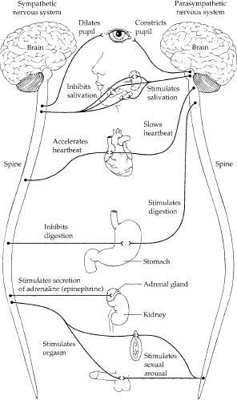
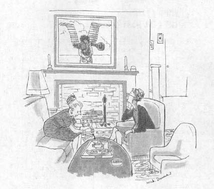
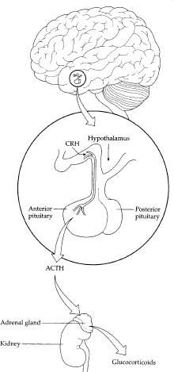

In order to begin the process of learning how stress can make us sick, there is something about the workings of the brain that we have to appreciate. It is perhaps best illustrated in the following rather technical paragraph from an early investigator in the field:
In order to begin the process of learning how stress can make us sick, there is something about the workings of the brain that we have to appreciate. It is perhaps best illustrated in the following rather technical paragraph from an early investigator in the field:
As she melted small and wonderful in his arms, she became infinitely desirable to him, all his blood-vessels seemed to scald with intense yet tender desire, for her, for her softness, for the penetrating beauty of her in his arms, passing into his blood. And softly, with that marvelous swoon-like caress of his hand in pure soft desire, softly he stroked the silky slope of her loins, down, down between her soft, warm buttocks, coming nearer and nearer to the very quick of her. And she felt him like a flame of desire, yet tender, and she felt herself melting in the flame. She let herself go. She felt his penis risen against her with silent amazing force and assertion, and she let herself go to him. She yielded with a quiver that was like death, she went all open to him.
Now think about this. If D. H. Lawrence is to your taste, there may be some interesting changes occurring in your body. You haven’t just run up a flight of stairs, but maybe your heart is beating faster. The temperature has not changed in the room, but you may have just activated a sweat gland or two. And even though certain rather sensitive parts of your body are not being overtly stimulated by touch, you are suddenly very aware of them.
You sit in your chair not moving a muscle, and simply think a thought, a thought having to do with feeling angry or sad or euphoric or lustful, and suddenly your pancreas secretes some hormone. Your pancreas? How did you manage to do that with your pancreas? You don’t even know where your pancreas is. Your liver is making an enzyme that wasn’t there before, your spleen is text-messaging something to your thymus gland, blood flow in little capillaries in your ankles has just changed. All from thinking a thought.
We all understand intellectually that the brain can regulate functions throughout the rest of the body, but it is still surprising to be reminded of how far-reaching those effects can be. The purpose of this chapter is to learn a bit about the lines of communication between the brain and elsewhere, in order to see which sites are activated and which are quieted when you are sitting in your chair and feeling severely stressed. This is a prerequisite for seeing how the stress-response can save your neck during a sprint across the savanna, but make you sick during months of worry.
Stress and the
Autonomic Nervous System

Outline of some of the effects of the sympathetic and parasympathetic nervous systems on various organs and glands.
The principal way in which your brain can tell the rest of the body what to do is to send messages through the nerves that branch from your brain down your spine and out to the periphery of your body. One dimension of this communication system is pretty straightforward and familiar. The voluntary nervous system is a conscious one. You decide to move a muscle and it happens. This part of the nervous system allows you to shake hands or fill out your tax forms or do a polka. It is another branch of the nervous system that projects to organs besides skeletal muscle, and this part controls the other interesting things your body does—blushing, getting gooseflesh, having an orgasm. In general, we have less control over what our brain says to our sweat glands, for example, than to our thigh muscles. (The workings of this automatic nervous system are not entirely out of our control, however; biofeedback, for example, consists of learning to alter this automatic function consciously. Potty training is another example of us gaining mastery. On a more mundane level, we are doing the same thing when we repress a loud burp during a wedding ceremony.) The set of nerve projections to places like sweat glands carry messages that are relatively involuntary and automatic. It is thus termed the autonomic nervous system, and it has everything to do with your response to stress. One half of this system is activated in response to stress, one half is suppressed.
The half of the autonomic nervous system that is turned on is called the sympathetic nervous system.* Originating in the brain, sympathetic projections exit your spine and branch out to nearly every organ, every blood vessel, and every sweat gland in your body. They even project to the scads of tiny little muscles attached to hairs on your body. If you are truly terrified by something and activate those projections, your hair stands on end; gooseflesh results when the parts of your body are activated where those muscles exist but lack hairs attached to them.
The sympathetic nervous system kicks into action during emergencies, or what you think are emergencies. It helps mediate vigilance, arousal, activation, mobilization. To generations of first-year medical students, it is described through the obligatory lame joke about the sympathetic nervous system mediating the four F’s of behavior—flight, fight, fright, and sex. It is the archetypal system that is turned on at times when life gets exciting or alarming, such as during stress. The nerve endings of this system release adrenaline. When someone jumps out from behind a door and startles you, it’s your sympathetic nervous system releasing adrenaline that causes your stomach to clutch. Sympathetic nerve endings also release the closely related substance noradrenaline. (Adrenaline and noradrenaline are actually British designations; the American terms, which will be used from now on, are epinephrine and norepinephrine.) Epinephrine is secreted as a result of the actions of the sympathetic nerve endings in your adrenal glands (located just above your kidneys); norepinephrine is secreted by all the other sympathetic nerve endings throughout the body. These are the chemical messengers that kick various organs into gear, within seconds.
The other half of the autonomic nervous system plays an opposing role. This parasympathetic component mediates calm, vegetative activities—everything but the four F’s. If you are a growing kid and you have gone to sleep, your parasympathetic system is activated. It promotes growth, energy storage, and other optimistic processes. Have a huge meal, sit there bloated and happily drowsy, and the parasympathetic is going like gangbusters. Sprint for your life across the savanna, gasping and trying to control the panic, and you’ve turned the parasympathetic component down. Thus, the autonomic system works in opposition: sympathetic and parasympathetic projections from the brain course their way out to a particular organ where, when activated, they bring about opposite results. The sympathetic system speeds up the heart; the parasympathetic system slows it down. The sympathetic system diverts blood flow to your muscles; the parasympathetic does the opposite. It’s no surprise that it would be a disaster if both branches were very active at the same time, kind of like putting your foot on the gas and brake simultaneously. Lots of safety features exist to make sure that does not happen. For example, the parts of the brain that activate one of the two branches typically inhibit the other.

“Oh, that’s Edward and his fight-or-flight mechanism.”
Your Brain:
The Real Master Gland
The neural route represented by the sympathetic system is a first means by which the brain can mobilize waves of activity in response to a stressor. There is another way as well—through the secretion of hormones. If a neuron (a cell of the nervous system) secretes a chemical messenger that travels a thousandth of an inch and causes the next cell in line (typically, another neuron) to do something different, that messenger is called a neurotransmitter. Thus, when the sympathetic nerve endings in your heart secrete norepinephrine, which causes heart muscle to work differently, norepinephrine is playing a neurotransmitter role. If a neuron (or any cell) secretes a messenger that, instead, percolates into the bloodstream and affects events far and wide, that messenger is a hormone. All sorts of glands secrete hormones; the secretion of some of them is turned on during stress, and the secretion of others is turned off.
What does the brain have to do with all of these glands secreting hormones? People used to think, “Nothing.” The assumption was that the peripheral glands of the body—your pancreas, your adrenal, your ovaries, your testes, and so on—in some mysterious way “knew” what they were doing, had “minds of their own.” They would “decide” when to secrete their messengers, without directions from any other organ. This erroneous idea gave rise to a rather silly fad during the early part of the twentieth century. Scientists noted that men’s sexual drive declined with age, and assumed that this occurs because the testicles of aging men secrete less male sex hormone, testosterone. (Actually, no one knew about the hormone testosterone at the time; they just referred to mysterious “male factors” in the testes. And in fact, testosterone levels do not plummet with age. Instead, the decline is moderate and highly variable from one male to the next, and even a decline in testosterone to perhaps 10 percent of normal levels does not have much of an effect on sexual behavior.) Making another leap, they then ascribed aging to diminishing sexual drive, to lower levels of male factors. (One may then wonder why females, without testes, manage to grow old, but the female half of the population didn’t figure much in these ideas back then.) How, then, to reverse aging? Give the aging males some testicular extracts.
Soon, aged, monied gentlemen were checking into impeccable Swiss sanitariums and getting injected daily in their rears with testicular extracts from dogs, from roosters, from monkeys. You could even go out to the stockyards of the sanitarium and pick out the goat of your choice—just like picking lobsters in a restaurant (and more than one gentleman arrived for his appointment with his own prized animal in tow). This soon led to an offshoot of such “rejuvenation therapy,” namely, “organotherapy”—the grafting of little bits of testes themselves. Thus was born the “monkey gland” craze, the term gland being used because journalists were forbidden to print the racy word testes. Captains of industry, heads of state, at least one pope—all signed up. And in the aftermath of the carnage of World War I, there was such a shortage of young men and such a surfeit of marriages of younger women to older men, that therapy of this sort seemed pretty important.
Advertisement, New York Therapeutic Review, 1893.
Naturally, the problem was that it didn’t work. There wasn’t any testosterone in the testicular extracts—patients would be injected with a water-based extract, and testosterone does not go into solution in water. And the smidgens of organs that were transplanted would die almost immediately, with the scar tissue being mistaken for a healthy graft. And even if they didn’t die, they still wouldn’t work—if aging testes are secreting less testosterone, it is not because the testes are failing, but because another organ (stay tuned) is no longer telling them to do so. Put in a brand-new set of testes and they should fail also, for lack of a stimulatory signal. But not a problem. Nearly everyone reported wondrous results anyway. If you’re paying a fortune for painful daily injections of extracts of some beast’s testicles, there’s a certain incentive to decide you feel like a young bull. One big placebo effect.
With time, scientists figured out that the testes and other peripheral hormone-secreting glands were not autonomous, but were under the control of something else. Attention turned to the pituitary gland, sitting just underneath the brain. It was known that when the pituitary was damaged or diseased, hormone secretion throughout the body became disordered. In the early part of the century, careful experiments showed that a peripheral gland releases its hormone only if the pituitary first releases a hormone that kicks that gland into action. The pituitary contains a whole array of hormones that run the show throughout the rest of the body; it is the pituitary that actually knows the game plan and regulates what all the other glands do. This realization gave rise to the memorable cliché that the pituitary is the master gland of the body.
This understanding was disseminated far and wide, mostly in the Reader’s Digest, which ran the “I Am Joe’s” series of articles (“I Am Joe’s Pancreas,” “I Am Joe’s Shinbone,” “I Am Joe’s Ovaries,” and so on). By the third paragraph of “I Am Joe’s Pituitary,” out comes that master gland business. By the 1950s, however, scientists were already learning that the pituitary wasn’t the master gland after all.
The simplest evidence was that if you removed the pituitary from a body and put it in a small bowl filled with pituitary nutrients, the gland would act abnormally. Various hormones that it would normally secrete were no longer secreted. Sure, you might say, remove any organ and throw it in some nutrient soup and it isn’t going to be good for much of anything. But, interestingly, while this “explanted” pituitary stopped secreting certain hormones, it secreted others at immensely high rates. It wasn’t just that the pituitary was traumatized and had shut down. It was acting erratically because, it turned out, the pituitary didn’t really have the whole hormonal game plan. It would normally be following orders from the brain, and there was no brain on hand in that small bowl to give directions.
The evidence for this was relatively easy to obtain. Destroy the part of the brain right near the pituitary and the pituitary stops secreting some hormones and secretes too much of others. This tells you that the brain controls certain pituitary hormones by stimulating their release and controls others by inhibiting them. The problem was to figure out how the brain did this. By all logic, you would look for nerves to project from the brain to the pituitary (like the nerve projections to the heart and elsewhere), and for the brain to release neurotransmitters that called the shots. But no one could find these projections. In 1944, the physiologist Geoffrey Harris proposed that the brain was also a hormonal gland, that it released hormones that traveled to the pituitary and directed the pituitary’s actions. In principle, this was not a crazy idea; a quarter-century before, one of the godfathers of the field, Ernst Scharrer, had shown that some other hormones, thought to originate from a peripheral gland, were actually made in the brain. Nevertheless, lots of scientists thought Harris’s idea was bonkers. You can get hormones from peripheral glands like ovaries, testes, pancreas—but your brain oozing hormones? Preposterous! This seemed not only scientifically implausible but somehow also an unseemly and indecorous thing for your brain to be doing, as opposed to writing sonnets.
Two scientists, Roger Guillemin and Andrew Schally, began looking for these brain hormones. This was a stupendously difficult task. The brain communicates with the pituitary by a minuscule circulatory system, only slightly larger than the period at the end of this sentence. You couldn’t search for these hypothetical brain “releasing hormones” and “inhibiting hormones” in the general circulation of blood; if the hormones existed, by the time they reached the voluminous general circulation, they would be diluted beyond detection. Instead, you would have to search in the tiny bits of tissue at the base of the brain containing those blood vessels going from the brain to the pituitary.
Not a trivial task, but these two scientists were up to it. They were highly motivated by the abstract intellectual puzzle of these hormones, by their potential clinical applications, by the acclaim waiting at the end of this scientific rainbow. Plus, the two of them loathed each other, which invigorated the quest. Initially, in the late 1950s, Guillemin and Schally collaborated in the search for these brain hormones. Perhaps one tired evening over the test tube rack, one of them dissed the other in some way—the actual events have sunk into historical obscurity; in any case a notorious animosity resulted, one enshrined in the annals of science at least on a par with the Greeks versus the Trojans, maybe even with Coke versus Pepsi. Guillemin and Schally went their separate ways, each intent on being the first to isolate the putative brain hormones.
How do you isolate a hormone that may not exist or that, even if it does, occurs in tiny amounts in a minuscule circulation system to which you can’t gain access? Both Guillemin and Schally hit on the same strategy. They started collecting animal brains from slaughterhouses. Cut out the part at the base of the brain, near the pituitary. Throw a bunch of those in a blender, pour the resulting brain mash into a giant test tube filled with chemicals that purify the mash, collect the droplets that come out the other end. Then inject those droplets into a rat and see if the rat’s pituitary changes its pattern of hormone release. If it does, maybe those brain droplets contain one of those imagined releasing or inhibiting hormones. Try to purify what’s in the droplets, figure out its chemical structure, make an artificial version of it, and see if that regulates pituitary function. Pretty straightforward in theory. But it took them years.
One factor in this Augean task was the scale. There was at best a minuscule amount of these hormones in any one brain, so the scientists wound up dealing with thousands of brains at a time. The great slaughterhouse war was on. Truckloads of pig or sheep brains were collected; chemists poured cauldrons of brain into monumental chemical-separation columns, while others pondered the thimblefuls of liquid that dribbled out the bottom, purifying it further in the next column and the next…. But it wasn’t just mindless assembly-line work. New types of chemistry had to be invented, completely novel ways of testing the effects in the living body of hormones that might or might not actually exist. An enormously difficult scientific problem, made worse by the fact that lots of influential people in the field believed these hormones were fictions and that these two guys were wasting a lot of time and money.
Guillemin and Schally pioneered a whole new corporate approach to doing science. One of our clichés is the lone scientist, sitting there at two in the morning, trying to figure out the meaning of a result. Here there were whole teams of chemists, biochemists, physiologists, and so on, coordinated into isolating these putative hormones. And it worked. A “mere” fourteen years into the venture, the chemical structure of the first releasing hormone was published.* Two years after that, in 1971, Schally got there with the sequence for the next hypothalamic hormone, and Guillemin published two months later. Guillemin took the next round in 1972, beating Schally to the next hormone by a solid three years. Everyone was delighted, the by-then-deceased Geoffrey Harris was proved correct, and Guillemin and Schally got the Nobel Prize in 1976. One of them, urbane and knowing what would sound right, proclaimed that he was motivated only by science and the impulse to help mankind; he noted how stimulating and productive his interactions with his co-winner had been. The other, less polished but more honest, said the competition was all that drove him for decades and described his relationship with his co-winner as “many years of vicious attacks and bitter retaliation.”
So hooray for Guillemin and Schally; the brain turned out to be the master gland. It is now recognized that the base of the brain, the hypothalamus, contains a huge array of those releasing and inhibiting hormones, which instruct the pituitary, which in turn regulates the secretions of the peripheral glands. In some cases, the brain triggers the release of pituitary hormone X through the action of a single releasing hormone. Sometimes it halts the release of pituitary hormone Y by releasing a single inhibiting hormone. In some cases, a pituitary hormone is controlled by the coordination of both a releasing and an inhibiting hormone from the brain—dual control. To make matters worse, in some cases (for example, the miserably confusing system that I study) there is a whole array of hypothalamic hormones that collectively regulate the pituitary, some as releasers, others as inhibitors.
Hormones of the
Stress-Response
As the master gland, the brain can experience or think of something stressful and activate components of the stress-response hormonally. Some of the hypothalamus-pituitary-peripheral gland links are activated during stress, some inhibited.
Two hormones vital to the stress-response, as already noted, are epinephrine and norepinephrine, released by the sympathetic nervous system. Another important class of hormones in the response to stress are called glucocorticoids. By the end of this book you will be astonishingly informed about glucocorticoid trivia, since I am in love with these hormones. Glucocorticoids are steroid hormones. (Steroid is used to describe the general chemical structure of five classes of hormones: androgens—the famed “anabolic” steroids like testosterone that get you thrown out of the Olympics—estrogens, progestins, mineralocorticoids, and glucocorticoids.) Secreted by the adrenal gland, they often act, as we will see, in ways similar to epinephrine. Epinephrine acts within seconds; glucocorticoids back this activity up over the course of minutes or hours.

Outline of the control of glucocorticoid secretion. A stressor is sensed or anticipated in the brain, triggering the release of CRH (and related hormones) by the hypothalamus. These hormones enter the private circulatory system linking the hypothalamus and the anterior pituitary, causing the release of ACTH by the anterior pituitary. ACTH enters the general circulation and triggers the release of glucocorticoids by the adrenal gland.
Because the adrenal gland is basically witless, glucocorticoid release must ultimately be under the control of the hormones of the brain. When something stressful happens or you think a stressful thought, the hypothalamus secretes an array of releasing hormones into the hypothalamic-pituitary circulatory system that gets the ball rolling. The principal such releaser is called CRH (corticotropin releasing hormone), while a variety of more minor players synergize with CRH.* Within fifteen seconds or so, CRH triggers the pituitary to release the hormone ACTH (also known as corticotropin). After ACTH is released into the bloodstream, it reaches the adrenal gland and, within a few minutes, triggers glucocorticoid release. Together, glucocorticoids and the secretions of the sympathetic nervous system (epinephrine and norepinephrine) account for a large percentage of what happens in your body during stress. These are the workhorses of the stress-response.
In addition, in times of stress your pancreas is stimulated to release a hormone called glucagon. Glucocorticoids, glucagon, and the sympathetic nervous system raise circulating levels of the sugar glucose. As we will see, these hormones are essential for mobilizing energy during stress. Other hormones are activated as well. The pituitary secretes prolactin, which, among other effects, plays a role in suppressing reproduction during stress. Both the pituitary and the brain also secrete a class of endogenous morphine-like substances called endorphins and enkephalins, which help blunt pain perception, among other things. Finally, the pituitary also secretes vasopressin, also known as antidiuretic hormone, which plays a role in the cardiovascular stress-response.
Just as some glands are activated in response to stress, various hormonal systems are inhibited during stress. The secretion of various reproductive hormones such as estrogen, progesterone, and testosterone is inhibited. Hormones related to growth (such as growth hormone) are also inhibited, as is the secretion of insulin, a pancreatic hormone that normally tells your body to store energy for later use.
(Are you overwhelmed and intimidated by these terms, wondering if you should have bought some Deepak Chopra self-help book instead? Please, don’t even dream of memorizing these names of hormones. The important ones are going to appear so regularly in the coming pages that you will soon be comfortably and accurately slipping them into everyday conversation and birthday cards to favorite cousins. Trust me.)
A Few Complications
This, then, is an outline of our current understanding of the neural and hormonal messengers that carry the brain’s news that something awful is happening. Cannon was the first to recognize the role of epinephrine, norepinephrine, and the sympathetic nervous system. As noted in the previous chapter, he coined the phrase “fight-or-flight” response, which is a way of conceptualizing the stress-response as preparing the body for that sudden burst of energy demands. Selye pioneered the glucocorticoid component of the story. Since then the roles of the other hormones and neural systems have been recognized. In the dozen years since this book first came out, various new minor hormonal players have been added to the picture, and, undoubtedly, more are yet to be discovered. Collectively, these shifts in secretion and activation form the primary stress-response.
Naturally there are complications. As will be reiterated throughout the following chapters, the stress-response is about preparing the body for a major expenditure of energy—the canonical (or, perhaps, Cannonical) “fight-or-flight” response. Recent work by the psychologist Shelley Taylor of UCLA has forced people to rethink this. She suggests that the fight-or-flight response is what dealing with stress is about in males, and that it has been overemphasized as a phenomenon because of the long-standing bias among (mostly male) scientists to study males rather than females.
Taylor argues convincingly that the physiology of the stress-response can be quite different in females, built around the fact that in most species, females are typically less aggressive than males, and that having dependent young often precludes the option of flight. Showing that she can match the good old boys at coming up with a snappy sound bite, Taylor suggests that rather than the female stress-response being about fight-or-flight, it’s about “tend and befriend”—taking care of her young and seeking social affiliation. As will be seen in the final chapter of the book, there are some striking gender differences in stress management styles that support Taylor’s view, many of them built around the propensity toward social affiliation.
Taylor also emphasizes a hormonal mechanism that helps contribute to the “tend and befriend” stress-response. While the sympathetic nervous system, glucocorticoids, and the other hormones just reviewed are about preparing the body for major physical demands, the hormone oxytocin seems more related to the tend and befriend themes. The pituitary hormone plays a role in causing the female of various mammalian species to imprint on her child after birth, to stimulate milk production, and to stimulate maternal behavior. Moreover, oxytocin may be critical for a female to form a monogamous pair bond with a male (in the relatively few mammalian species that are monogamous).* And the fact that oxytocin is secreted during stress in females supports the idea that responding to stress may not just consist of preparing for a mad dash across the savanna, but may also involve feeling a pull toward sociality.
A few critics of Taylor’s influential work have pointed out that sometimes the stress-response in females can be about fight-or-flight, rather than affiliation. For example, females are certainly capable of being wildly aggressive (often in the context of protecting their young), and often sprint for their lives or for a meal (among lions, for example, females do most of the hunting). Moreover, sometimes the stress-response in males can be about affiliation rather than fight-or-flight. This can take the form of creating affiliative coalitions with other males or, in those rare monogamous species (in which males typically do a fair amount of the child care), some of the same tending and befriending behaviors as seen among females. Nevertheless, amid these criticisms, there is a widespread acceptance of the idea that the body does not respond to stress merely by preparing for aggression or escape, and that there are important gender differences in the physiology and psychology of stress.
Some more complications arise. Even when considering the classic stress-response built around fight-or-flight, not all of its features work quite the same way in different species. For example, while stress causes a prompt decline in the secretion of growth hormone in rats, it causes a transient increase in growth hormone secretion in humans (this puzzle and its implication for humans are discussed in the chapter on growth).
Another complication concerns the time course in actions of epinephrine and glucocorticoids. A few paragraphs back, I noted that the former works within seconds, while the latter backs up epinephrine’s activity over the course of minutes to hours. That’s great—in the face of an invading army, sometimes the defensive response can take the form of handing out guns from an armory (epinephrine working in seconds), and a defense can also take the form of beginning construction of new tanks (glucocorticoids working over hours). But within the framework of lions chasing zebras, how many sprints across the grasslands actually go on for hours? What good are glucocorticoids if some of their actions occur long after your typical dawn-on-the-savanna stressor is over with? Some glucocorticoid actions do help mediate the stress-response. Others help mediate the recovery from the stress-response. As will be described in chapter 8, this probably has important implications for a number of autoimmune diseases. And some glucocorticoid actions prepare you for the next stressor. As will be discussed in chapter 13, this is critical for understanding the ease with which anticipatory psychological states can trigger glucocorticoid secretion.
Another complication concerns consistency of the stress-response when it is activated. Central to Selye’s conceptualization was the belief that whether you are too hot or too cold, or are that zebra or that lion (or simply stressed by the repetitiveness of that phrase), you activate the same pattern of secretion of glucocorticoids, epinephrine, growth hormone, estrogen, and so forth for each of those stressors. This is mostly true, and this intertwining of the various branches of the stress-response into a package deal starts at the brain, where the same pathway can both stimulate CRH release from the hypothalamus and activate the sympathetic nervous system. Moreover, epinephrine and glucocorticoids, both secreted by the adrenal, can potentiate each other’s release.
However, it turns out that not all stressors produce the exact same stress-response. The sympathetic nervous system and glucocorticoids play a role in the response to virtually all stressors. But the speed and magnitudes of the sympathetic and glucocorticoid branches can vary depending on the stressor, and not all of the other endocrine components of the stress-response are activated for all stressors. The orchestration and patterning of hormone release tend to vary at least somewhat from stressor to stressor, with there being a particular hormonal “signature” for a particular stressor.
One example concerns the relative magnitude of the glucocorticoid versus the sympathetic stress-responses. James Henry, who has done pioneering work on the ability of social stressors such as subordinance to cause heart disease in rodents, has found that the sympathetic nervous system is particularly activated in a socially subordinate rodent that is vigilant and trying to cope with a challenge. In contrast, it is the glucocorticoid system that is relatively more activated in a subordinate rodent that has given up on coping. Studies of humans have shown what may be a human analogue of that dichotomy. Sympathetic arousal is a relative marker of anxiety and vigilance, while heavy secretion of glucocorticoids is more a marker of depression. Furthermore, all stressors do not cause secretion of both epinephrine and norepinephrine, nor of norepinephrine from all branches of the sympathetic system.
In some cases, the stress signature sneaks in through the back door. Two stressors can produce identical profiles of stress hormone release into the bloodstream. So where’s the signature that differentiates them? Tissues in various parts of the body may be altered in their sensitivity to a stress hormone in the case of one stressor, but not the other.
Finally, as will be the topic of chapter 13, two identical stressors can cause very different stress signatures, depending on the psychological context of the stressors. Thus, every stressor does not generate exactly the same stress-response. This is hardly surprising. Despite the dimensions common to various stressors, it is still a very different physiological challenge to be too hot or too cold, to be extremely anxious or deeply depressed. Despite this, the hormonal changes outlined in this chapter, which occur pretty reliably in the face of impressively different stressors, still constitute the superstructure of the neural and endocrine stress-response. We are now in a position to see how these responses collectively save our skins during acute emergencies but can make us sick in the long run.